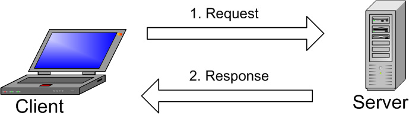
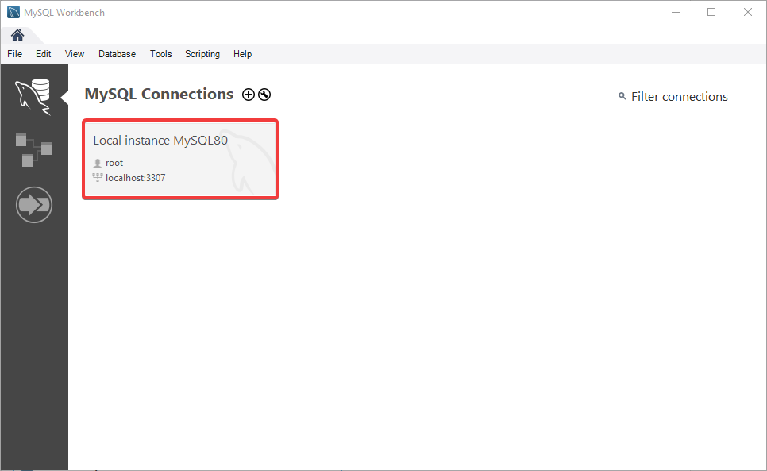

### Relational database management system (RDBMS): - helps to bring in new information - quickly updates information during multi-user access - reduces the risk of error
### Main types of DBMS: 1. relational 2. object-oriented 3. distributed 4. NoSQL, the second name is non-relational 5. data storage
#### WordPress site database
#### Selected ***wp_posts*** and ***wp_users*** tables
#### ***post_author*** in the ***wp_posts*** table
#### Users ID in the ***wp_users*** table
#### Client-server model 
### Key features of MySQL: 1. Support for a large number of table types 2. Support for standard SQL commands: - SELECT, DELETE, INSERT, REPLACE, UPDATE - support for operators and functions in the SELECT and WHERE parts of queries working with GROUP BY and ORDER BY - support for group functions COUNT(), AVG(), STD(), SUM(), MAX() and MIN(), the ability to use JOIN in queries, incl. LEFT OUTER JOIN and RIGHT OUTER JOIN
### Key features of MySQL: 3. Available on over 20 platforms including Mac, Windows, Linux and Unix 4. Support for many types of data: - signed or unsigned integers 1, 2, 3, 4, and 8 bytes long FLOAT; DOUBLE; CHAR; VARCHAR; BINARY; VARBINARY; TEXT; BLOB DATE; TIME; DATETIME; TIMESTAMP; YEAR; SET; ENUM; OpenGIS Spatial Types - fixed- and variable-length string types
### Key features of MySQL: 5. Use of access privilege system and encrypted passwords 6. Support for a number of administration systems, for example, MySQL Workbench 7. Flexibility 8. High performance 9. Free to use and open source
### Drawbacks: 1. Limited functionality (all SQL features are not implemented) 2. There may be problems with the reliability of data storage and transmission due to open source code
### DB-Engines Ranking ###### (https://db-engines.com/)
### MySQL Clients - MySQL Command Line Client - MySQL Shell Console Client - MySQL Workbench Graphical Client
#### ***Workbench*** start window 
#### Working window of ***Workbench***
#### Table creation
#### Getting data from a table <img src="./images/tablewithdata.png" alt="Getting data from a table">
Using MySQL with Node.js
### Create a connection <pre><code data-trim data-noescape> const mysql = require('mysql2'); const connection = mysql.createConnection({ host: 'localhost', user: 'user', password: 'serverpassword', database: 'users' }); connection.connect((err) => { if (err) throw err; console.log('Connected!'); }); </code></pre>
### CLOSE THE CONNECTION<br><br> <pre><code data-trim data-noescape> connection.end((err) => { // The connection is terminated gracefully // Ensures all remaining queries are executed // Then sends a quit packet to the MySQL server. }); </code></pre>
## Executing queries<hr> ### Reading <pre><code data-trim data-noescape> con.query('SELECT * FROM usersinfo', (err,rows) => { if(err) throw err; console.log('Data received from Db:'); console.log(rows); }); </code> <br> <p class="fragment"> <code data-trim data-noescape> rows.forEach( (row) => { console.log(`${row.name} is ${row.age} years old`); }); </code> </p> </pre>
### CREATING <pre><code data-trim data-noescape> const user = { name: 'Craig', age: '32' }; con.query('INSERT INTO usersinfo SET ?', user, (err, res) => { if(err) throw err; console.log('Last insert ID:', res.id); }); </code></pre>
### UPDATING <pre><code data-trim data-noescape> connection.query( 'UPDATE usersinfo SET name = ? Where ID = ?', ['Bob', 3], (err, result) => { if (err) throw err; console.log(`Changed ${result.changedRows} row(s)`); } ); </code></pre>
### Deleting <pre><code data-trim data-noescape> connection.query( 'DELETE FROM usersinfo WHERE id = ?', [5], (err, result) => { if (err) throw err; console.log(`Deleted ${result.affectedRows} row(s)`); } ); </code></pre>
## Thank you for watching!<br><br> My GitHub: [atcherdsd](https://github.com/atcherdsd/)